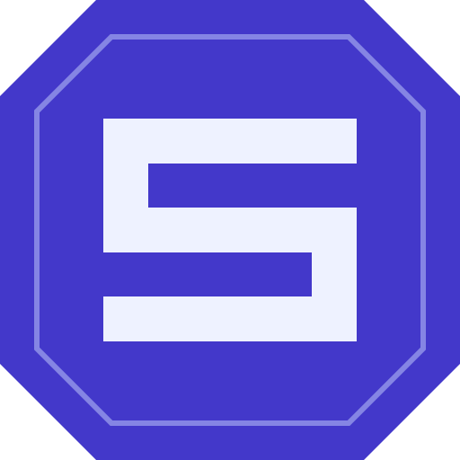
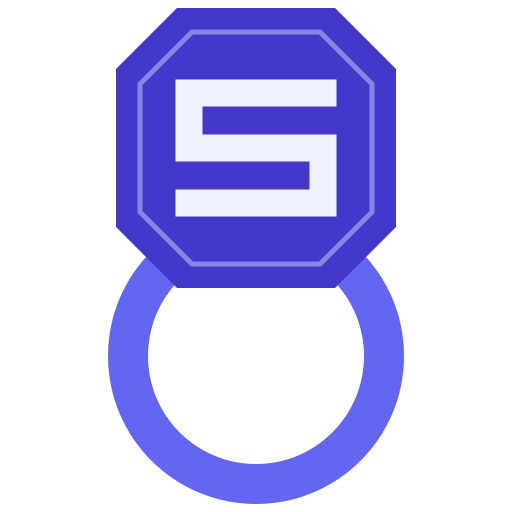
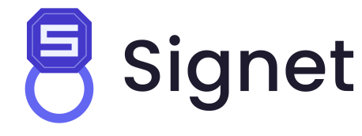

Signet / brandSignet · Brand guidelines
Signet is a self-hosted OAuth 2.0 / OIDC authorization server written in Go. Its mark is a signet ring — the original instrument for certifying documents. The ring stays with its owner; the seal it presses can be verified by anyone but forged by no one. The logo is the architecture diagram.

The ring — the private key you hold
The impression — the RS256 signature anyone can verify
The system uses two marks that share the same octagonal geometry and the same colors. When the logo scales down and the band is dropped, what remains is still unmistakably the same object — recognition never breaks between a conference slide and a 16 px favicon.
mark.svg
The complete ring — octagonal bezel with a carved “S” on a ring band. Use wherever there is room: README headers, websites, slides, social cards. Above ~64 px height.
icon.svg
The bezel alone. Use at small sizes — favicons, org avatars, app icons — where the band would collapse into a thin line. Below ~64 px height.
Every decision in the mark maps to something true about what Signet does.
A signet ring stays with its owner — pressing it into wax produces a mark anyone can verify but nobody else can make. The ring is the private key you hold; the impression is the verifiable RS256 signature it stamps onto every token.
The eight-sided bezel reads as a cut, engraved stone, and its silhouette stays distinctive at tiny sizes where a circle would blend into every other round avatar.
The bezel sits in front in #4338CA; the band recedes one step
lighter in #6366F1. Two flat tones are enough to read as a
three-dimensional ring — no gradients or shadows, so the mark stays
trivially reproducible.
The frost strokes are drawn as engraved lines in the stone — a seal ready to stamp, not a letter pasted on top.
Seven colors, no gradients. Two indigos build the ring, two frosts carve it, and three neutrals carry the wordmark across light and dark.
Click a stone to copy its hex value.
The wordmark is set in Poppins Medium, converted to outlines in every logo file — no font dependency ships with the assets.
Signet
AaBbCcDdEeFfGgHhIiJjKkLlMmNnOoPpQqRrSs 0123456789
Poppins
Display. Medium 500 for the wordmark, SemiBold 600 for headlines. Geometric, like the bezel.
IBM Plex Sans
Body. Documentation and interface copy alongside the brand.
IBM Plex Mono
Data. Hex values, file names, scopes, tokens — anything a developer will copy.
The marks are mode-agnostic — only the wordmark ink switches. Use
logo-auto.svg
on websites; GitHub READMEs need the <picture> pattern.


The mark works because it is exact. Keep it that way.
Everything ships as SVG plus a generated favicon set. All assets are licensed CC BY 4.0.
| File | Usage |
|---|---|
| logo.svg | Full lockup (ring + wordmark) for light backgrounds |
| logo-dark.svg | Full lockup for dark backgrounds |
| logo-auto.svg | Lockup that follows prefers-color-scheme (websites, not GitHub READMEs) |
| mark.svg | Full mark, square — slides, stickers, large avatars |
| icon.svg | Small mark, square — favicons and tiny contexts |
| preview.png / preview-dark.png | 1200×630 social / Open Graph cards |
| favicon/ | Generated favicon set + HEAD-snippet.html |
{kind=link}
{kind=link}
{kind=link}
{kind=link}
{kind=link}
{kind=link}
{kind=link}